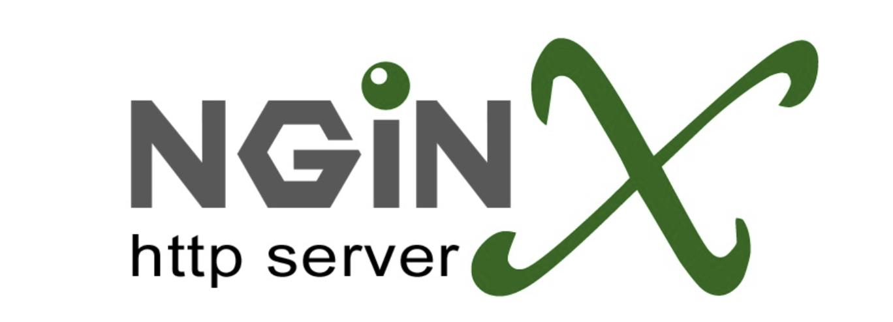

首先，想要搞明白Nginx和Apache，我们首先要对网络IO的相关概念做了解，这是非常重要的。什么是阻塞IO，什么是非阻塞IO，什么是异步IO，什么是多路转接，什么是reactor模式。
因此对于上面这些内容，在下面这篇博客中有详细的解释和讲解。
Apache HTTP服务器采用了经典的多进程/多线程模型。它的主要组件包括主进程/线程（Master Process/thread）和工作进程线程（Worker Process/thread）。当Apache启动时，主进程首先被创建，并监听指定的端口，等待客户端连接。当有新的连接请求到达时，主进程接受该连接并将其分派给一个可用的工作进程。
通俗来说，就是多线程或者多进程，当然一般是用线程的，因为线程占用cpu资源少。其实就是一个主线程，在统一管理一些新线程。服务器启动，一个主线程被创建，如果底层来链接了，则创建一个新线程，调用accept，则这个新线程专门用于处理这一个特定的链接，直到链接关闭。来一个链接，主线程就创建一个新线程，本质就是用新线程去接任务的道理。当然这种方案是可以优化的，一般会做一个线程池去完成这些事情，先创建好一堆线程，然后来链接了，则一个线程去领任务，如果线程池线程不够了，可以选择创建，或者阻塞等其他线程释放。
那么这种方法问题在哪呢？如果一个链接来了，是一个长链接，我赖着不走，也不给你发消息，那你这领任务线程咋办？就只能被这个占着坑位不干活的链接吊着，既不能释放，也不能工作。如果这样的长链接很多，这是非常吃CPU资源的！
Nginx采用了事件驱动的、异步的单进程模型。它的底层结构由多个模块组成，包括事件模块、HTTP模块、反向代理模块等。
核心组件是事件模块，它利用操作系统提供的异步I/O机制（如epoll、kqueue）来实现高效的事件处理。Nginx的主进程是一个事件驱动的Reactor，通过事件循环（Event Loop）监听和接受客户端连接。当有新的连接到达时，主进程会将连接分发给一个可用的工作进程。
工作进程（Worker Process）是Nginx实际处理请求的执行者。每个工作进程都是独立的，并且在多个连接间共享相同的事件循环。工作进程通过事件驱动的方式处理请求，包括读取请求、解析请求头、处理请求逻辑、生成响应等。在处理请求的过程中，Nginx使用非阻塞I/O操作，充分利用异步I/O机制来提高并发处理能力。
其中reactor就是Nginx的核心构件，我直接举一个例子解释，什么是事件循环，什么是监听这些东西。直接举例子，大家就明白了。对于一个HTTP请求而言：
对于一个服务器，肯定有一个监听套接字listensock。当服务器开启之后，肯定会有其他地方来的许多链接，想和我们这个服务器三次握手，因此我们有连接来了，应该去accept对吧？但是现在在epoll多路转接模式下，不能直接让listensock去accept！为什么，因为我不知道什么时候来链接啊，如果链接没来，我调用accept不就阻塞了？因此，我们应该把listensock放到epoll里面去注册！！然后直接返回，不用阻塞！注册好之后，如果链接来了，也就是说listensock套接字（套接字的本质就是文件描述符，这些基本的概念博主也不赘述了）的读事件就绪了！epoll就会通知我！我此时再去accept，此时是一定不会被阻塞了！因为epoll告诉我，listensock的读事件已经就绪了！
那么我们知道accept之后的套接字，也就是普通套接字，可能会给我们发消息的，那么按照之前的方法，直接调用read行吗？肯定是不行的！没消息来你read什么，没消息你read不就阻塞了？epoll里面不能有这么低级的操作。因此，同样，注册到epoll里面去！啥时候来消息了，epoll告诉你，你就不用管了，直接返回。
整个过程将一个请求分成了多个阶段，每个阶段都会在许多模块中注册并进行处理，而且所有的操作都是异步非阻塞的。异步在这里表示服务器执行一个任务后无需等待返回结果，而是在完成后自动接收通知。
整个过程是单进程单线程的，但是高并发！长链接来了我不怕啊，你只是注册在epoll里面，你不来消息，我就不在你身上花时间（调用read），因此这种方式非常的高效！！！！！这种方式使得服务器能够高效处理多个并发请求，并能在等待I/O操作期间执行其他任务，以提高整体性能。
Reactor模式是一种设计模式，用于构建事件驱动的应用程序。在Reactor模式中，有一个事件循环（Event Loop）负责监听事件并调度对应的处理程序。具体的底层实现可以采用多种技术和系统调用，其中epoll是Linux系统下常用的事件通知机制之一。
在Linux系统中，epoll提供了高效的I/O事件通知机制，使得服务器能够处理大量的并发连接。因此，很多Reactor模式的实现会选择使用epoll作为底层的事件通知机制，以实现高性能的事件驱动。
然而，Reactor模式的底层实现并不仅限于epoll，它也可以使用其他的事件通知机制，如select、poll等，或者在其他操作系统上使用相应的机制，如kqueue（在FreeBSD和Mac OS X上）或IOCP（在Windows上）。
因此，Reactor模式并不依赖于特定的底层实现，而是关注于事件驱动的设计思想和模式。具体的底层实现取决于操作系统和开发者选择的事件通知机制。
此外，Nginx还提供了强大的模块化架构，用户可以根据需求选择和配置不同的模块。Nginx的模块可以实现诸如负载均衡、缓存、反向代理、SSL/TLS加密等功能。模块可以通过配置文件进行加载和配置，使得Nginx具有很高的灵活性和可扩展性。
最近博主就在做一个这样的http服务器，基于Reactor异步IO，底层多路转接的方式实现的，可以达到高效率的要求。
现在这个项目的后端已经基本完善了，现在还在完善一些细节，希望大家多多支持这个项目。
无论是Nginx还是Squid等反向代理服务器，它们都采用了事件驱动的网络模式。事件驱动实际上是一项古老的技术，早期使用的是select和poll等机制。随后，基于内核通知的更高级事件机制出现，例如libevent中的epoll，这提高了事件驱动的性能。事件驱动的核心仍然是I/O事件，应用程序能够快速切换在多个I/O句柄之间，实现所谓的异步I/O。事件驱动服务器非常适合处理I/O密集型任务，例如反向代理，它充当客户端和Web服务器之间的数据中转站，仅涉及纯粹的I/O操作，而不涉及复杂的计算。使用事件驱动来构建反向代理是更好的选择，一个工作进程即可运行，无需管理进程和线程带来的开销，同时CPU和内存消耗也较小。
因此，Nginx和Squid等服务器都是采用这种方式实现的。当然，Nginx也可以采用多进程加事件驱动的模式，几个进程运行libevent，而无需像Apache那样需要数百个进程。Nginx在处理静态文件时也表现出色，这是因为静态文件本身也属于磁盘I/O操作，处理方式相同。至于所谓的数万并发连接，这并没有多大意义。随手编写一个网络程序就可以处理数万个并发连接，但如果大多数客户端都被阻塞在某处，那就没有多少价值了。
再来看看像Apache或Resin这样的应用服务器，它们之所以被称为应用服务器，是因为它们需要运行具体的业务应用程序，如科学计算、图形图像处理、数据库读写等。它们很可能是CPU密集型的服务，而事件驱动并不适合此类情况。举个例子，如果某项计算需要2秒的耗时，那么这2秒将完全阻塞进程，事件机制毫无作用。想象一下，如果MySQL改用事件驱动，一个大型的join或sort操作将阻塞所有客户端。在这种情况下，多进程或多线程展现出优势，每个进程可以独立地执行任务，彼此不会阻塞或干扰。当然，现代CPU速度越来越快，单个计算的阻塞时间可能很短，但只要存在阻塞，事件编程就不具备优势。因此，进程和线程等技术不会消失，而是与事件机制相辅相成，并将长期存在。
总而言之，事件驱动适用于I/O密集型服务，而多进程或多线程适用于CPU密集型服务。它们各自具有优势，并不存在取代彼此的趋势。
本段文字参考：